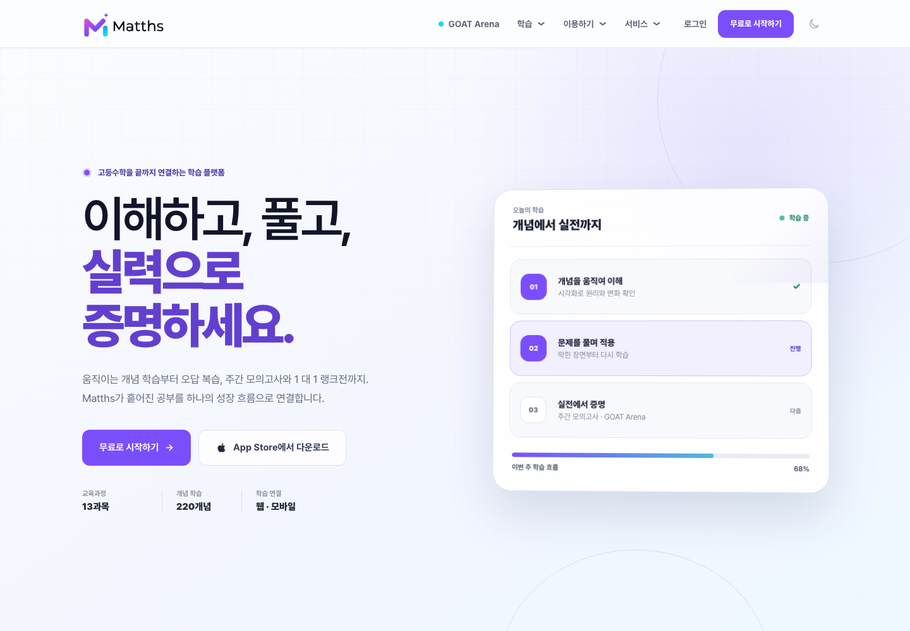

Connect content to a learning flow
Product and content work are considered together rather than treating videos, practice, and assessment as unrelated deliverables.
EDTECH · CO-FOUNDER & CPO
Connect mathematics content, practice, and a more engaging learning experience.

An education product has to help a learner take a useful next step. Adding content or game mechanics is only valuable when it supports that learning journey.
An AI education startup developed with friends, with work spanning mathematics content, product flows, web prototypes, and brand media. The related War of Masters repository demonstrates a game-like assessment and progression interface.
Product and content work are considered together rather than treating videos, practice, and assessment as unrelated deliverables.
War of Masters makes onboarding, a placement exam, ranking, progression, and asynchronous duel concepts inspectable. Its authentication, data, and scoring are still demonstration behavior.
Experiments with AI advertising highlighted that fine visual refinements are not always the customer’s main concern. That experience shifted my attention toward what the person using the product needs.
A published Matths website and a public React interface repository are linked below. Business registration and founding are part of my experience; this page does not present unverified user, revenue, or learning-outcome numbers.
Shipping more is not the same as resolving a user’s problem. I am learning to connect content and implementation decisions to a specific learner need and make the prototype’s limits explicit.
War of Masters is a frontend prototype, not a connected production ranking or assessment service. Its sample content and assets need appropriate rights before wider product distribution. Matths is collaborative work; I do not claim sole authorship of the company’s code.
Define a focused learner journey and evaluate it with students before broadening the product.